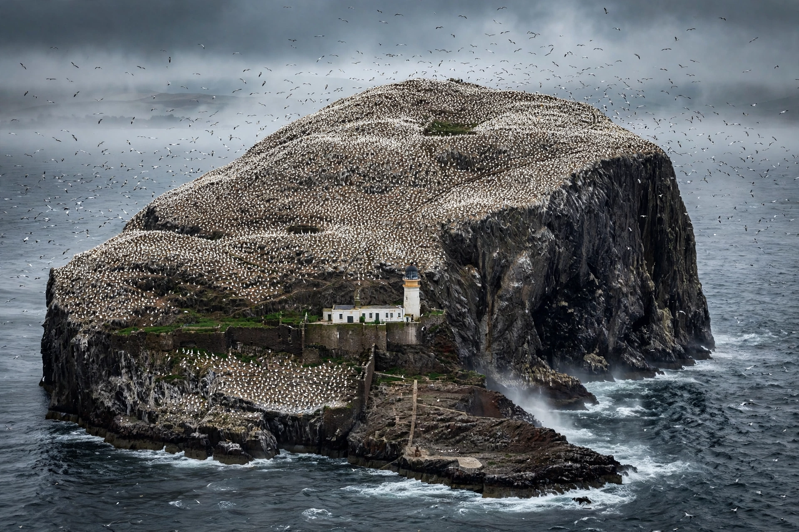

The Bass Rock is an island in the outer part of the Firth of Forth in eastern Scotland. It is home to a large colony of northern gannets — the world's largest — and its scientific name Morus bassanus derives from the rock.

The volcanic island held a castle and was used as a prison, notably for Covenanters and Jacobites. A lighthouse was built in 1902. The island is now a nature reserve owned by the Dalrymple family, with a seabird centre in North Berwick providing live camera views.